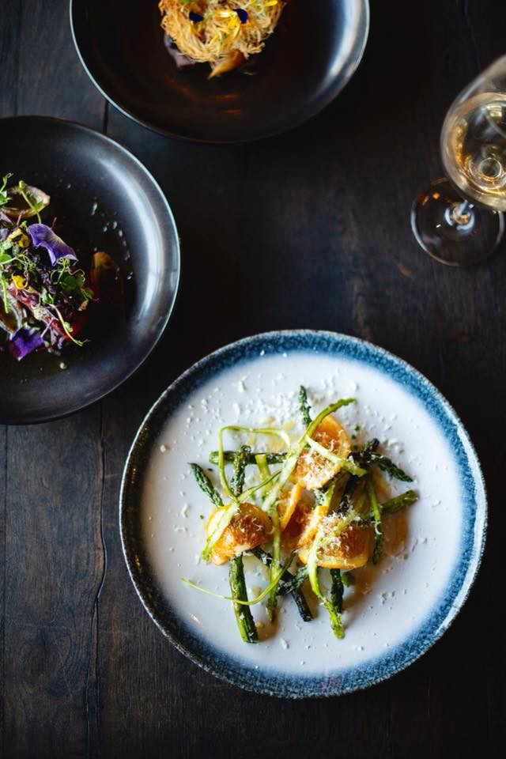
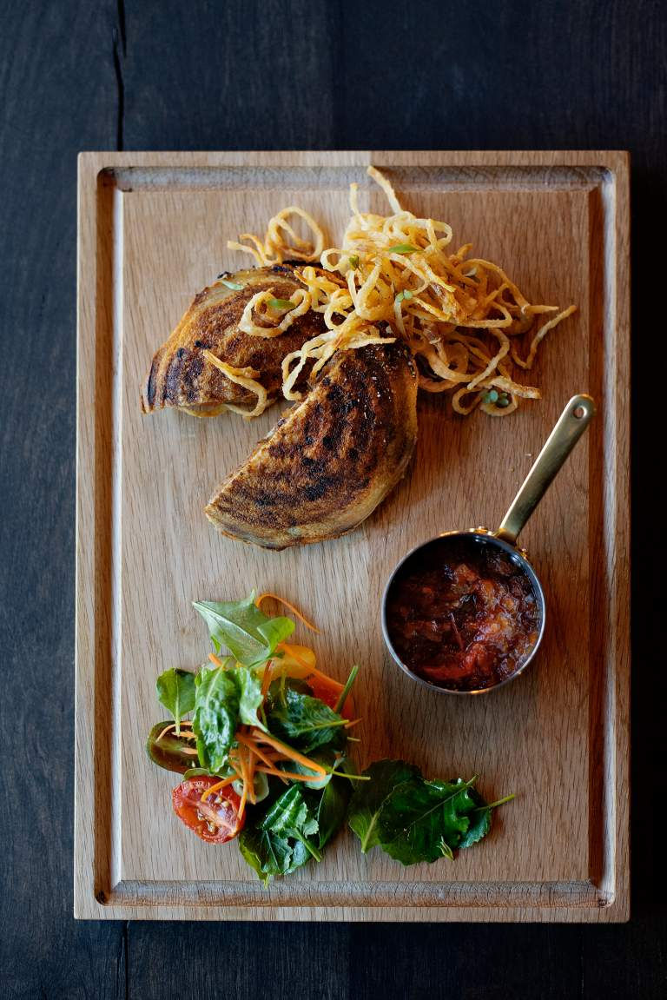
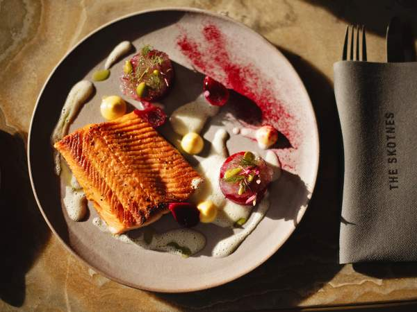
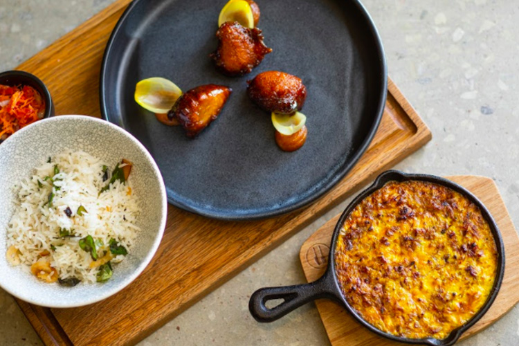
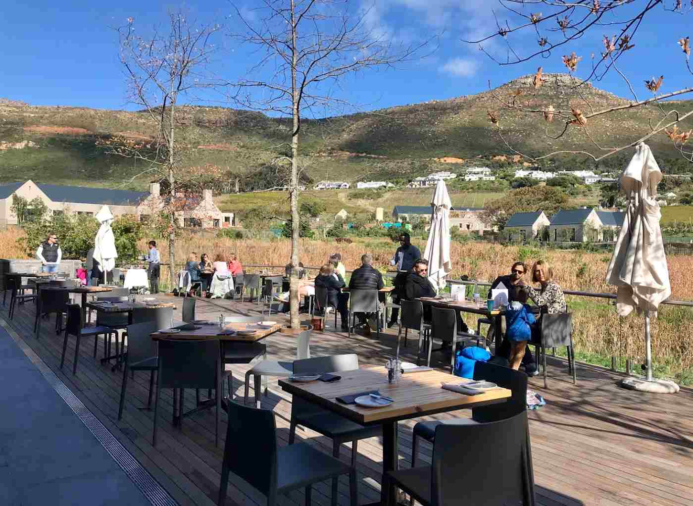
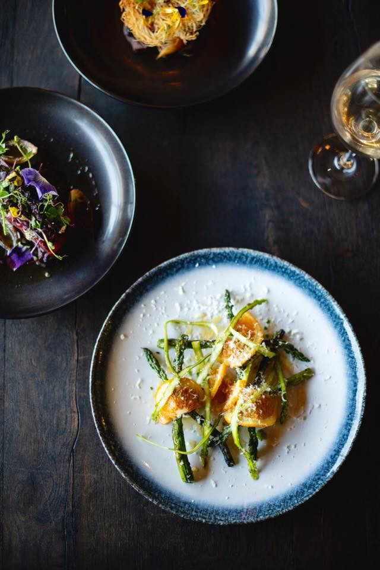
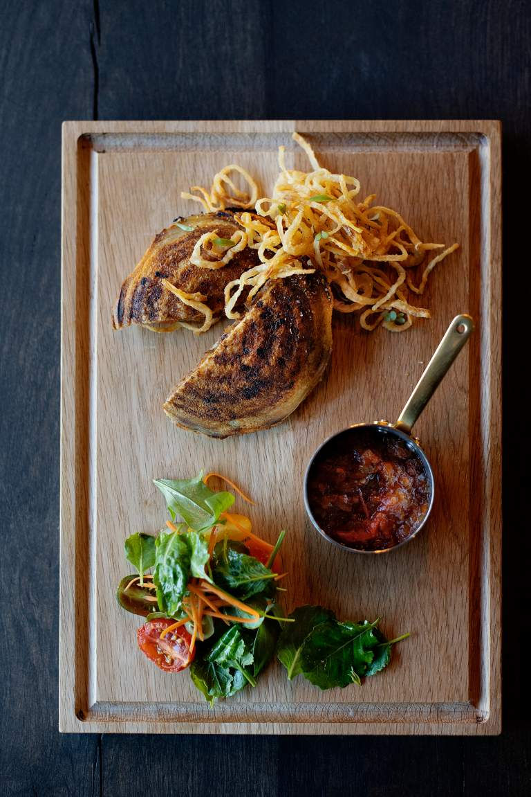
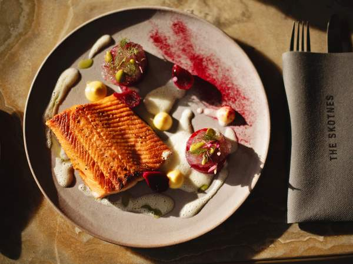
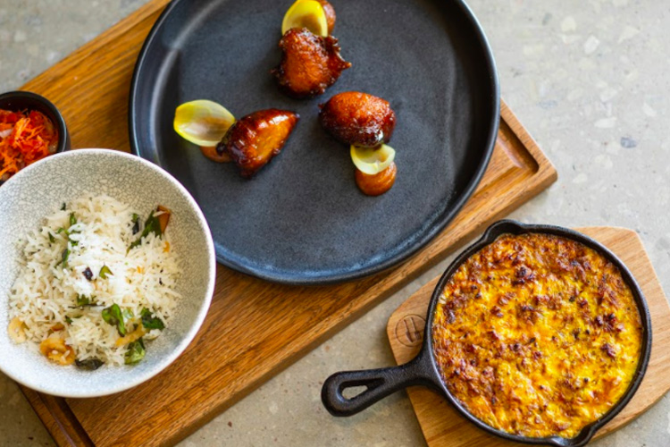
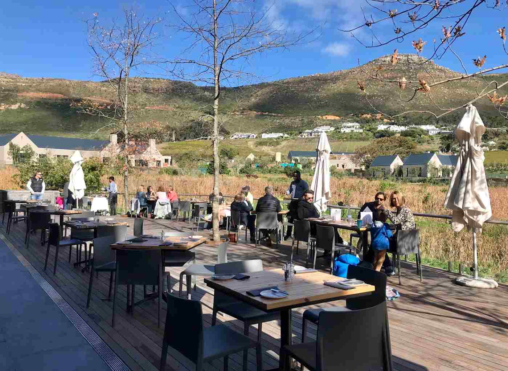

Welcome to Skotnes Restaurant & Bar
- I took the plunge. As you walk into this venue you are greeted by the charming manager & his staff. They make you feel so welcome, thank you.
- The Skotnes restaurant at the Norval Foundation with Phil de Villiers the resident chef whom I was introduced to, Kyle our waitron and Shaun the manager - made for a superb and relaxing environment to be in.The service was outstanding - right down to them bringing a Tabard candle to the table when a fly appeared from nowhere, without any prompting from me. A risotto is often a risky menu item - and I ordered the sweetcorn one - I was a little nervous but it restored my faith in good chefs - it was outstanding. My husband had the pea and Natal porcini gnocchi and didn't complain - gathered it was very good too. The large garden filled with sculptures and showcasing/representing South Africa and Africa's finest talent should not be missed. Everything at the Normal Foundation is world class - from their incredibly tempting in-house shop to the galleries exhibiting their art - from the quirky to the technically brilliant. Its Zeitz MOCAA on a much smaller scale and boasting an enviable garden, coupled with a far superior restaurant and shop, along with un-challenging parking.
-We went for lunch to celebrate my wife’s birthday. We both had a 2 course meal as part of their Winter special. Really enjoyed the food which was excellent and well presented. As an added touch, the restaurant provides a small rest for all Ladies handbags so that they do not have to be placed on the floor.
 








